1. Představení firmy a cílů (KPI)
Kontext
- Projekt představuje strategický poradenský datový systém pro týmy působící v Formula 1.
- Cílem je podpora rozhodování během závodu na základě analýzy telemetrických a strategických dat (degradace pneumatik, tempo, pit stop výkonnost, externí podmínky).
- Systém pomáhá optimalizovat závodní strategii, minimalizovat riziko chybného rozhodnutí a zvyšovat bodový zisk při omezeném rozpočtu týmu.
- Název firmy: Formula engineering
- Doména: Sportovní analytika
Zákazníci a uživatelé
- Zákazníci: týmy působící v Formula 1
Primární uživatelé systému v rámci týmu
- Strategy Chief
- Performance Engineer
- Team Principal
- Systém je určen zejména menším a středně velkým týmům, které nemají rozsáhlé interní analytické kapacity
Problém
Menší týmy v Formula 1 často nedisponují rozsáhlými analytickými kapacitami a pokročilými simulačními
nástroji jako top týmy.
Dochází tak k:
- omezenému vyhodnocování alternativních strategií (undercut / overcut),
- pomalejší reakci na vývoj závodu,
- nedostatečné kvantifikaci dopadu rozhodnutí na bodový zisk a návratnost investic.
Ekonomický model a cenotvorba služby
Pro stanovení ceny služby Formula Engineering byl vytvořen jednoduchý pětiletý finanční model návratnosti investice (bez diskontování cash flow).
Vstupní předpoklady
- Jednorázové náklady na vývoj (CAPEX): 550 000 EUR
- Roční provozní náklady (OPEX): 180 000 EUR
- Počet týmů ve Formuli 1: 11
- Cílová doba návratnosti: 5 let
Celkové náklady za 5 let
- Provozní náklady za pětileté období: 180 000 × 5 = 900 000 EUR
- Celkové náklady projektu: 550 000 + 900 000 = 1 450 000 EUR
- Aby byl projekt splacen do 5 let, musí celkové příjmy dosáhnout minimálně 1 450 000 EUR
Cena za tým
- Při zapojení všech 11 týmů: 1 450 000 / 11 ≐ 131 818 EUR na tým za 5 let
- Roční cena za tým: 131 818 / 5 ≐ 26 364 EUR ročně
Komerční cena a marže
Uvedená hodnota představuje čistý bod zvratu bez zohlednění marže, reinvestic a rizik.
Při započtení
- obchodní marže,
- rezervy na další vývoj,
- rizika fluktuace klientů
Kontext rozpočtu F1 týmů
Roční rozpočtový strop týmů se pohybuje přibližně mezi 120–135 miliony EUR. Cena 50 000 EUR ročně představuje méně než 0,05 % ročního rozpočtu týmu. Z pohledu nákladové struktury tedy jde o velmi nízkou investici s potenciálně vysokým dopadem na bodový zisk, a tedy i na finanční odměny z šampionátu konstruktérů.
Business questions
- Kdy je optimální pit window pro přezutí vzhledem k degradaci pneumatik konkurence?
- Jak moc ovlivňuje teplota trati spotřebu paliva a životnost motoru?
- Jaká je pravděpodobnost zisku bodů při zvolení alternativní strategie
KPI
- PIT Stop Efficiency Index: poměr mezi časem pit stopu a průměrem top 3 týmů
- Degradation Delta: rozdíl mezi predikovaným a reálným časem na kolo s rostoucím počtem kol na sadě gum
- ROI: kolik bodů tým získal vzhledem k nákladům na vývoj v daném závodě
Stakeholdeři a rozhodnutí
Strategy Chief rozhoduje zda:
- má smysl riskovat undercut,
- reagovat okamžitě na pit soupeře,
- zůstat déle na trati (overcut),
- a vyhodnocuje, zda pit crew výkon umožňuje agresivní strategii podle PSEI.
- kalibruje model degradace pneumatik během závodu,
- informuje strategistu o reálném tempu
- upravuje predikci pit windows dle degradation delta.
- rozhoduje o alokaci rozpočtu,
- posuzuje efektivitu upgradu
- prioritizuje vývoj mezi tratěmi dle ROI.
Předpoklady a omezení
- Dostupnost dat: Spoléháme na bezplatné OpenF1 API, které má limity na počet dotazů (rate limiting) a neposkytuje interní data týmů (finance, přesná telemetrie vozu). Tento nedostatek byl vyřešen generováním syntetických dat.
- Granularita: Analýza je provedena primárně na úrovni jednotlivých kol (lap-level). Tabulka počasí s minutovou granularitou musela být na data o kolech mapována přes časová razítka.
- Latence: Model pracuje v dávkovém režimu (Batch processing) – analyzuje data po skončení závodu (nebo jeho části). Nejde o real-time systém; pro live nasazení na boxové zídce by bylo nutné přejít z REST API na datové streamy (např. WebSockets).
- Sezónnost: Analýza je prováděna pouze pro jeden konkrétní závod, což přináší silný "Track Bias". Výsledky degradace pneu nelze přenést na jiný okruh (jiný asfalt, jiné teploty). V rámci samotného závodu je pak sledována mikro-sezónnost v podobě měnící se teploty trati a úbytku paliva, což ovlivňuje tempo.
- Kvalita: Reálná data obsahovala šum a anomálie (extrémně dlouhá kola kvůli Safety Caru, chybné záznamy o pit stopech), které bylo nutné ošetřit analytickými pohledy (Views). Největším omezením kvality interpretace je chybějící přesný údaj o hmotnosti vozu (Fuel Burn effect), který v určitých případech maskuje skutečnou degradaci pneumatik.
2. Technické řešení
Zdrojová data
- Reálná data jsou získávána z open-source REST API poskytujícího data z oficiální časomíry Formule 1. Data jsou generována senzory na vozech (telemetrie, GPS) a traťovými systémy (počasí, pit stopy, průjezdy sektory).
- Syntetická data jsou vygenerována python skriptem. Jde o fiktivní, ale fyzikálně a logicky podložená data, která zahrnují spotřebu paliva, opotřebení motoru a R&D náklady. Skript simuluje interní, neveřejná data.
Integrace
- Režim a frekvence: V rámci projektu probíhá integrace dávkově (Batch processing) na vyžádání (Ad-hoc) pro konkrétní Session ID (konkrétní závodní víkend).
- Protokoly a formáty: Komunikace s OpenF1 probíhá přes HTTP/REST. Payload je stahován ve formátu JSON (strukturovaná a polostrukturovaná data). Syntetická data jsou ukládána jako lokální CSV soubory.
- Základní transformace (Extract & Load): Surové JSON a CSV soubory jsou hromadně načítány pomocí nativních funkcí read_json_auto a read_csv_auto přímo do relační podoby, kde probíhá odvození datových typů.
Uložení
- Technologie: Lokální analytická in-process databáze DuckDB.
- Struktura: Všechna data jsou uložena v jediném přenositelném souboru f1_project.duckdb, který plní roli centrálního OLAP (Online Analytical Processing) úložiště, optimalizovaného pro analytické dotazy nad sloupci.
Zpracování
Zpracování probíhá ELT (Extract, Load, Transform) přístupem přímo v databázi pomocí SQL a Pythonu (Pandas).
- Čištění: Tvorba analytických pohledů (Views) odstraňujících chybějící hodnoty (NULL) a outliery (fyzicky nereálné časy zastávek, příliš rychlá kola, a jízda za Safety Carem).
- Obohacení: Propojení (JOIN) reálných dat o časech na kolo se syntetickými daty o spotřebě a opotřebení motoru pomocí složených klíčů.
- Agregace: Využití pokročilých SQL Window funkcí pro identifikaci stintů (úseků na jedné sadě pneumatik) a výpočet komplexních metrik jako je Degradation Delta a Pit Stop Efficiency.
Škálování
Při 10x větším objemu dat:
Současné lokální řešení by narazilo na limity disku a paměti. Úložiště by bylo nutné migrovat do cloudového Data Warehouse (např. Google BigQuery, Snowflake) nebo Data Lakehouse platformy. Zpracování by se přesunulo z lokálního Pythonu do nástrojů jako dbt (Data Build Tool) pro robustní transformace v cloudu.
Přechod na near-real-tíme:
Dávkové REST API by muselo být nahrazeno streamovacím protokolem (WebSockets, MQTT). Místo DuckDB by byla nasazena streamovací pipeline (např. Apache Kafka pro message brokering a Apache Flink nebo Spark Streaming pro výpočet KPI v reálném čase).
Diagramy
todo3. Strategie nakládání s daty
Lifecycle
Byl zvolen čtyřfázový životní cyklus uzpůsobený analytickému projektu:- Získání (Ingestion): Stažení raw dat z OpenF1 API a lokální vygenerování syntetických datasetů.
- Zpracování (Processing): Čištění, typové konverze a tvorba analytických pohledů (Views) v DuckDB.
- Využití (Analysis): Výpočty KPI a vizualizace v Jupyter Notebooku.
- Retence (Archivace): Finální databáze f1_project.duckdb s agregovanými výsledky se archivuje pro historické srovnání.
Kvalita dat
Kvalitu je kontrolována přímo v SQL validačními pravidly:
- Úplnost (Completeness): Procento nevyplněných hodnot. Práh: Méně než 5 % chybějících časů kol (lap_duration IS NOT NULL).
- Přesnost (Accuracy): Detekce outlierů. Práh: Čas kola nesmí přesáhnout 120 sekund (eliminace Safety Caru); pit stop musí trvat mezi 1.5 a 30 sekundami.
- Konzistence (Consistency): Unikátnost. Práh: Nulová tolerance duplicit pro složený klíč driver_number + lap_number.
Etika a rizika
- Omezení interpretace (Fuel Burn effect): V reálných datech chybí přesná hmotnost paliva. Ubývání hmotnosti zrychluje vůz, což může maskovat skutečnou degradaci pneumatik – interpretace našeho modelu je tímto fyzikálním jevem limitována.
- Bias (Zkreslení trati): Analyzujeme data pouze z jednoho okruhu. Závěry o opotřebení pneu či motoru nelze plošně přenést na jiné tratě (každý okruh má jiný asfalt a profil).
- Syntetická data vs. realita: Metrika ROI vychází z našich expertních odhadů rozpočtů a opotřebení motoru simuluje fyziku pomocí Gaussova šumu. Ačkoliv data respektují reálné rozložení sil (Top týmy vs. zbytek), neodrážejí skutečné finanční a technické audity, které F1 týmy přísně tají.
4. Data a prezentace
Přehled datasetů
| Dataset (Tabulka) | Zdroj | Typ | Granularita | Klíčové atributy |
|---|---|---|---|---|
| laps | OpenF1 API | Reálná | 1 záznam = 1 kolo | driver_number, lap_number, lap_duration |
| pit_stops | OpenF1 API | Reálná | 1 záznam = 1 zastávka | driver_number, lap_number, pit_duration |
| weather | OpenF1 API | Reálná | 1 záznam = 1 minuta | date, track_temperature, humidity |
| position | OpenF1 API | Reálná | 1 záznam = změna | driver_number, date, position |
| synthetic_telemetry | Python skript | Syntetická | 1 záznam = 1 kolo | fuel_consumed, engine_wear_percent |
| synthetic_rd_costs | Python skript | Syntetická | 1 záznam = 1 tým | team_name, development_cost_usd |
- Data jsou uložena v relační databázi DuckDB. Hlavním propojovacím prvkem (Common Key) napříč datasety je kombinace driver_number a lap_number. Pro finanční analýzu (KPI 3) je využita mapovací tabulka, která přiřazuje startovní čísla jezdců k jejich týmům.
Metodika vytvoření syntetických dat
Rozdělení týmů
- Definice slovníku, který přiřazuje úroveň týmu
- Úrovně: Top, Mid, Back
- Rozdělení je využito pro generování nákladů na vývoj, Ferrari nebude mít stejný rozpočet jako Williams
Generování údajů o teplotě trati
base_temps = np.linspace(35.0, 28.0, NUM_LAPS) + np.random.normal(0, 1.5, NUM_LAPS)- Trend (np.linspace): Vytvoří postupně klesající řadu 50 čísel od 35 do 28. Simuluje tím, že závod začíná v horkém odpoledni a s blížícím se večerem trať chladne.
- Šum: Aby teplota neklesala dokonale lineárně, je ke každému bodu přidána náhodná odchylka (šum) podle Gaussovy křivky s průměrem 0 a směrodatnou odchylkou 1.5 °C.
Model spotřeby paliva
temp_impact_fuel = (track_temp - 30) * 0.015
noise_fuel = np.random.normal(0, 0.05)
fuel_consumed = 1.6 + temp_impact_fuel + noise_fuel- Základ: Průměrná spotřeba je 1.6 kg na kolo
- Korelace s teplotou (
temp_impact_fuel): Pokud je teplota trati nad 30°C, číslo je kladné a spotřeba roste, pod 30°C spotřeba mírně klesá. - Šum: Opět je přidána náhodná odchylka.
Model opotřebení motoru
-
wear_this_lap = base_wear_rate + temp_impact_wear + noise_wear
current_engine_wear += abs(wear_this_lap) - Start: Každý motor vstupuje do závodu už s drobným opotřebením (např. 28 až 30 %, vzhledem k tomu že data jsou sebrána ze 3. závodu, a motory jsou během sezóny měněny), které je vygenerováno pomocí random.uniform před začátkem závodu.
- Penalizace za extrémní teplo
(temp_impact_wear): Využita funkcemax(0, (track_temp - 32) * 0.02), která stanovuje, že pokud je teplota pod 32 °C, vliv tepla je nulová. Teplota přes 32 °C exponenciálně zvyšuje opotřebení. - Sčítání: Opotřebení z daného kola přičteme k celkovému stavu motoru.
Generování nákladů týmů
- Funkce vytváří tabulku synthetic_rd_costs pro ROI KPI
- Základní cena: Týmy dostanou fixní základy podle jejich úrovně
- Top: 2 500 000 USD, Mid: 1 200 000 USD, Back: 500 000 USD
- Fluktuace: Každý tým utrácí za závodní víkend různé množství peněz, základní cena je tedy vynásobena náhodným násobitelem mezi 80% a 120%.
Předzpracování
- Byl zvolen ELT (Extract, Load, Transform) přístup, kdy jsou surová data načtena do databáze DuckDB a veškeré úpravy probíhají formou analytických SQL pohledů (Views, např. v_clean_laps). Tím je zachována integrita zdrojových dat.
Čištění dat
- Ošetření chybějících hodnot (NULLs): Z analýzy byly vyloučeny záznamy bez naměřeného času (např. zaváděcí kola nebo nedokončená kola po nehodě) pomocí lap_duration IS NOT NULL
- Filtrace anomálií a outlierů: Odstranění extrémních hodnot, které by zkreslily výpočet KPI. Vyloučeny byly časy kol nad 115 sekund (jízda za Safety Carem) a extrémní časy pit stopů (pod 22 s jako chyby senzorů, nad 30 s jako opravy vozu/penalizace).
- Deduplikace: Kontrola unikátnosti záznamů na základě primárního složeného klíče (driver_number + lap_number).
Tvorba nových atributů
- Identifikace stintů (stint_id): Rozdělení závodu jezdce na souvislé jízdy na jedné sadě pneumatik pomocí detekce výjezdu z boxů a kumulativních součtů.
- Časové metriky: Výpočet aktuálního stáří pneumatiky v daném kole (laps_on_tyre) pomocí SQL Window funkce ROW_NUMBER().
- Pokročilé agregace: Nalezení nejlepšího času v každém stintu (base_pace přes MIN() OVER PARTITION) pro následné výpočty.
- Kategorické mapování: Vytvoření mapovací logiky (CASE WHEN) pro přiřazení čísel jezdců k domovským týmům, pro spojení se syntetickými daty o rozpočtech.
Typové konverze a integrace
- Konverze datových typů: Explicitní přetypování čísel jezdců (driver_number) z celých čísel (Integer) na textové řetězce (String/VARCHAR) v Pandas, aby s nimi vizualizační knihovny pracovaly jako s kategoriemi.
- Datová integrace (JOIN): Sjednocení reálné telemetrie ze sledování časů se syntetickými daty o opotřebení motoru a nákladech (R&D) prostřednictvím relačních vazeb napříč databází.
EDA a KPI
Ukázky využitých tabulek
🏎️ Tabulka: LAPS (Časy kol - ukázka 3 záznamů)
| driver_number | lap_number | lap_duration | is_pit_out_lap | |
|---|---|---|---|---|
| 0 | 12 | 1 | 99.215 | False |
| 1 | 63 | 1 | 98.270 | False |
| 2 | 81 | 1 | 95.711 | False |
🛑 Tabulka: PIT (Zastávky v boxech)
| driver_number | lap_number | pit_duration | |
|---|---|---|---|
| 0 | 1 | 16 | 23.3 |
| 1 | 87 | 16 | 25.0 |
| 2 | 16 | 17 | 22.9 |
⛽ Tabulka: SYNTHETIC_TELEMETRY (Palivo a motor)
| session_key | driver_number | lap_number | track_temperature_C | fuel_consumed_kg | engine_wear_percent | |
|---|---|---|---|---|---|---|
| 0 | 11253 | 12 | 1 | 32.79 | 1.706 | 28.73 |
| 1 | 11253 | 12 | 2 | 34.42 | 1.623 | 28.86 |
| 2 | 11253 | 12 | 3 | 34.82 | 1.629 | 28.98 |
💰 Tabulka: SYNTHETIC_RD_COSTS (Náklady na vývoj)
| session_key | team_name | development_cost_usd | |
|---|---|---|---|
| 0 | 11253 | Mercedes | 2895662 |
| 1 | 11253 | Ferrari | 2593391 |
| 2 | 11253 | McLaren | 2208674 |
🔗 UKÁZKA VAZBY: Časy kol + Syntetická telemetrie (JOIN na úroveň kola)
| driver_number | lap_number | real_lap_time | track_temperature_C | fuel_consumed_kg | engine_wear_percent | |
|---|---|---|---|---|---|---|
| 0 | 1 | 1 | 97.639 | 32.79 | 1.635 | 27.33 |
| 1 | 1 | 2 | 94.905 | 34.42 | 1.668 | 27.46 |
| 2 | 1 | 3 | 96.301 | 34.82 | 1.623 | 27.61 |
| 3 | 1 | 4 | 95.451 | 35.84 | 1.741 | 27.75 |
| 4 | 1 | 5 | 95.170 | 34.09 | 1.628 | 27.88 |
Data story a vizualizace
Klíčové proměnné
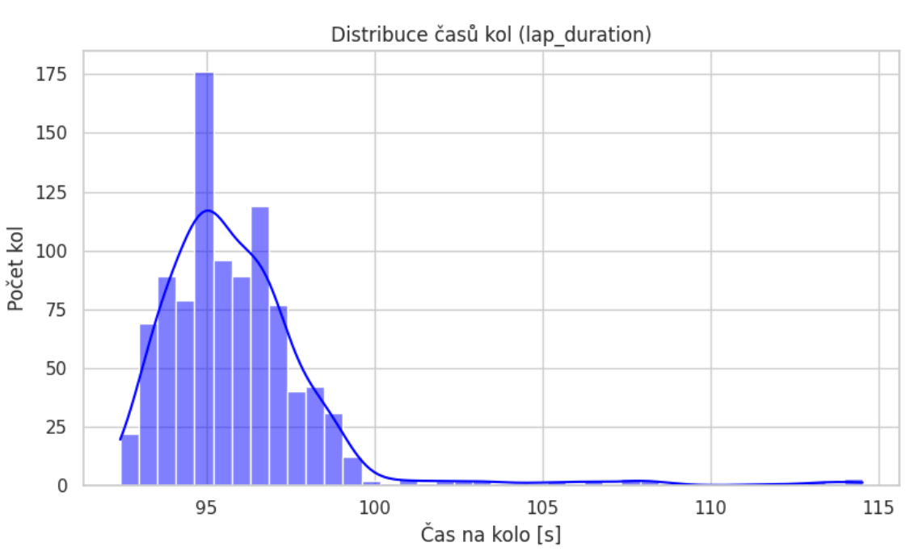
- Histogram zobrazuje četnost časů kol, kde většina hodnot tvoří normální rozdělení kolem 95 sekund. Dlouhý „chvost“ v pravé části grafu reprezentuje anomální kola zajetá v provozu nebo při chybách jezdce.
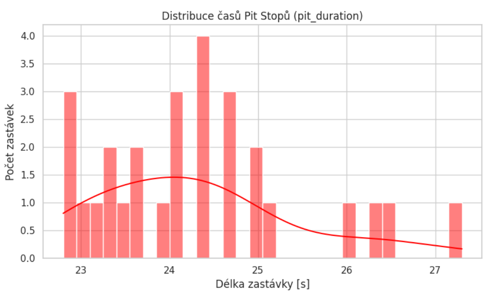
- Graf znázorňuje rozdělení délek zastávek v boxech, které se nejčastěji pohybují v úzkém rozmezí 23 až 25 sekund. Rozptyl hodnot pomáhá analytikům identifikovat standardní průběh servisu oproti ojedinělým technickým problémům.
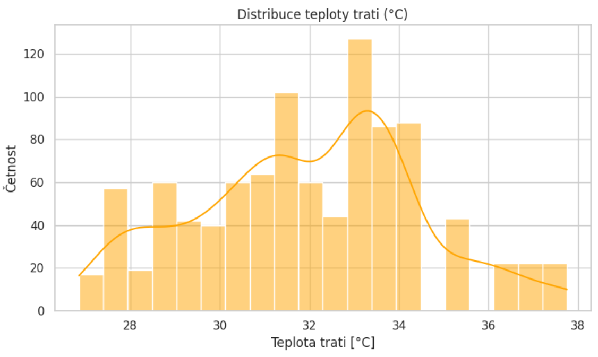
- Vizualizace rozdělení teploty trati ukazuje široké spektrum podmínek od 27 do 38 °C během session. Bimodální charakter křivky napovídá, že v průběhu závodu docházelo k výrazným klimatickým změnám (např. vliv oblačnosti).
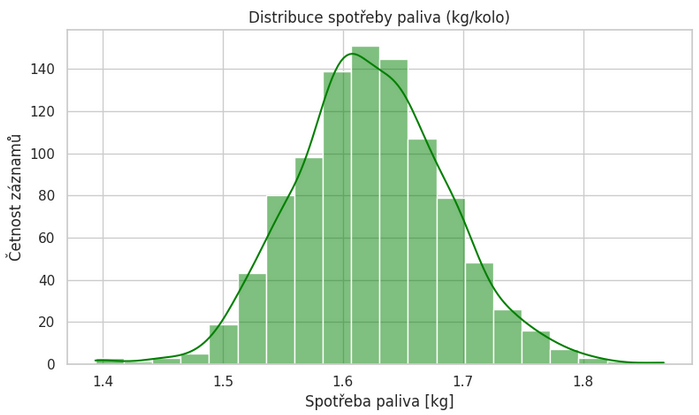
- Histogram potvrzuje logické rozdělení opotřebení motoru (zde v rozmezí 28–36 %), které odpovídá kumulativnímu nárůstu během třetího závodu sezóny. Tvar zvonovité křivky dokazuje úspěšnou implementaci Gaussova šumu do syntetických dat pro vyšší realističnost.
Průzkum dat
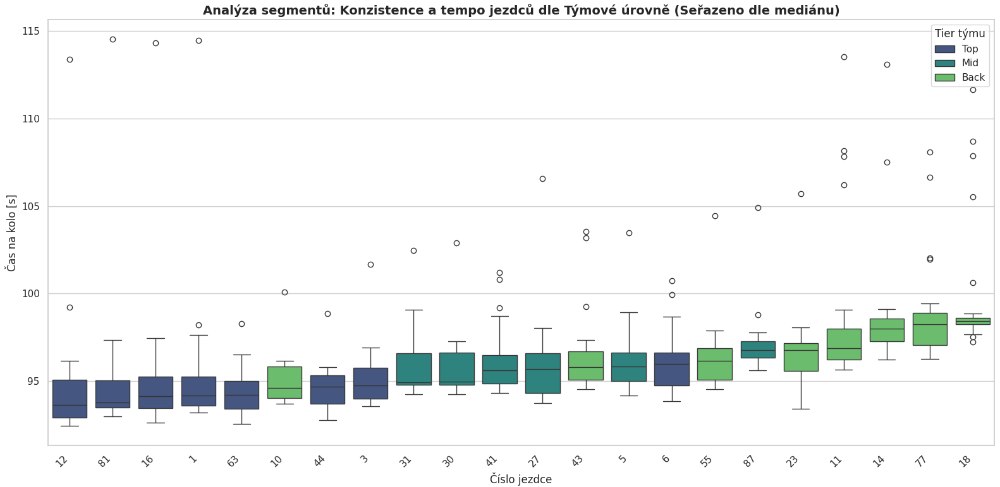
- Boxplot srovnává konzistenci a absolutní tempo jezdců rozdělených do tří výkonnostních úrovní (Top, Mid, Back). Seřazení podle mediánu času na kolo jasně demonstruje rozdíly v technické úrovni jednotlivých týmů na startovním roštu.
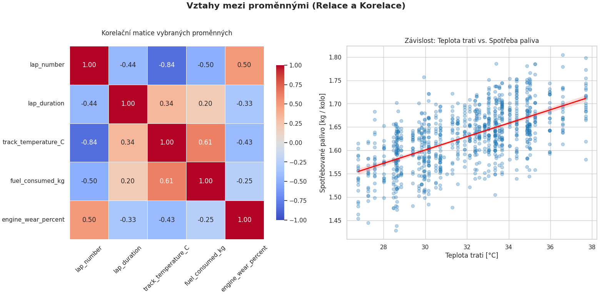
- Korelační matice vlevo odhaluje silné statistické vazby mezi proměnnými, zatímco regresní graf vpravo vizualizuje přímou závislost vyšší spotřeby paliva na rostoucí teplotě trati.
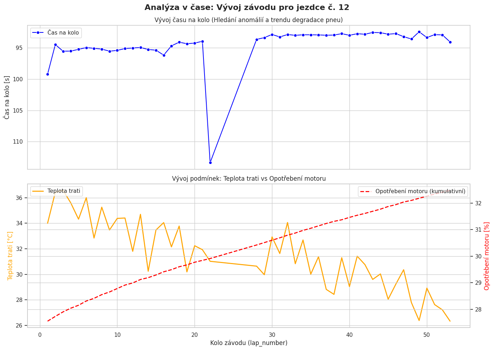
- Horní část sleduje vývoj času na kolo s jasně patrným zrychlením po výměně pneumatik (pit stopu). Spodní část grafu pak koreluje kolísající teplotu trati s plynule rostoucím kumulativním opotřebením motoru v průběhu celého závodu.
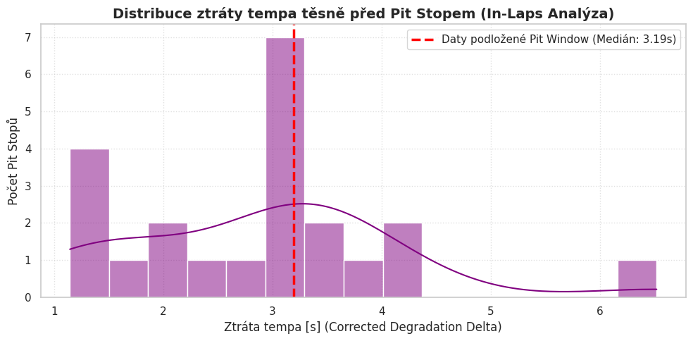
- In-Laps analýza ukazuje mediánovou ztrátu tempa těsně před reálným pit stopem 3.19 s.
KPI
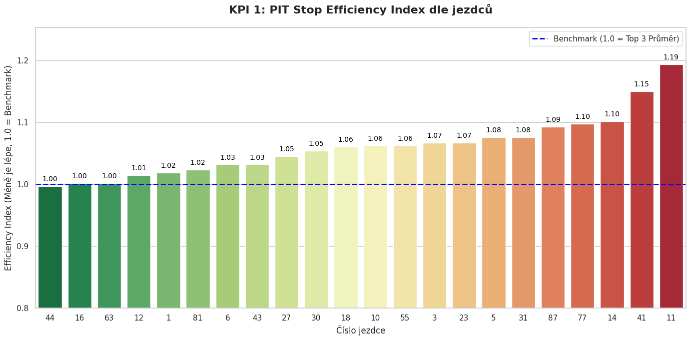
- Sloupcový graf zobrazuje efektivitu mechaniků jednotlivých jezdců, kde hodnota 1.0 představuje špičkový benchmark závodu. Nižší index (zelená barva) značí excelentní výkon, zatímco hodnoty nad 1.1 (červená barva) odhalují kritické časové ztráty při odbavení vozu.
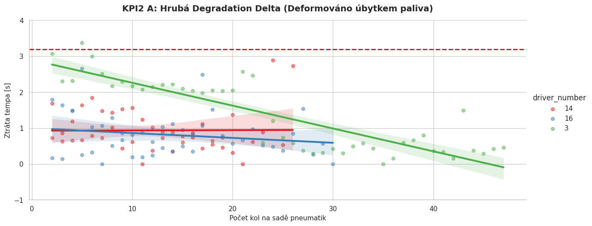
- Tento graf vizualizuje ztrátu tempa, kde je reálné opotřebení pneumatik maskováno úbytkem paliva, což vede k nelogickému zrychlování (klesající trend). Jde o důkaz limitace modelu před aplikací nezbytných fyzikálních korekcí.
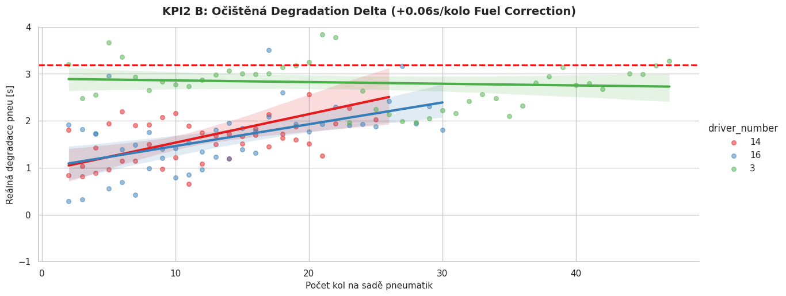
- Po aplikaci korekce na úbytek paliva graf konečně zobrazuje reálný nárůst ztráty tempa v důsledku degradace pneumatik. Červená přerušovaná čára značí kritickou mez 3.19 s, která definuje strop „Pit Window“. Po jeho překročení dochází k výrazným ztrátám které nemusí být dohnatelné po zbytek závodu..
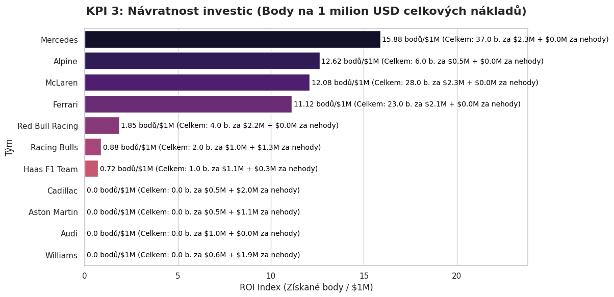
- Horizontální sloupcový graf srovnává finanční efektivitu týmů měřenou počtem získaných bodů na jeden milion USD vývojových nákladů. Ukazuje, že Mercedes a McLaren dosáhly nejlepšího poměru „cena/výkon“, zatímco týmy bez bodového zisku vykazují nulovou návratnost investice do daného závodu.
5. Diskuze, závěry a doporučení
Shrnutí zjištění
KPI 1: Pit Stop Efficiency Index
Mechanici Ferrari (16, 44), a Mercedesu (63) pracovali bezchybně a určovali tempo závodu (index 1.00). Naopak u jezdce č. 11 (Pérez) došlo k viditelnému zdržení – hodnota 1.19 znamená ztrátu téměř 20 % času oproti těm nejlepším, což ho mohlo stát pozici na trati.
KPI 2: Degradation Delta
- Graf 2A: Jasně prokazuje fyzikální limit dat z API – vliv lehkého auta s prázdnou nádrží (Fuel burn effect) stlačil trendové čáry dolů a kompenzuje se tak opotřebení pneumatik.
- Graf 2B: Po aplikaci penalizace +0.06s na kolo graf ukázal realitu opotřebení pneumatik. Zatímco jezdec 16 (Leclerc) dokázal držet tempo pod kritickou hranicí 1.5 sekundy až zhruba do 17. kola, jezdec 14 (Alonso) své pneumatiky zničil mnohem dříve a do pomyslného Pit Window spadl už kolem 10. kola.
KPI 3: Návratnost investic (ROI)
Mercedes a McLaren ukázali největší finanční efektivitu (kolem 9 bodů na každý milion investovaných dolarů). Ferrari sice získalo slušných 15 bodů, ale kvůli vysokým vývojovým nákladům (2.7M) je jejich efektivita téměř poloviční.
Limity vlastního řešení
- Kvalita a pokrytí dat: Neveřejnost interní telemetrie týmů vedla k použití syntetických dat. Zásadním limitem surových dat z API je absence údaje o hmotnosti vozu – vliv úbytku paliva (Fuel Burn effect) maskuje reálnou degradaci pneumatik, což bylo řešeno dodatečným korekčním koeficientem.
- Bias: Analýza je náchylná na „Track Bias“. Data pocházejí z jedné konkrétní Grand Prix (Suzuka, Japonsko 2026) a chování pneumatik nelze plošně zobecnit na jiné okruhy (např. městský okruh vs. permanentní trať).
- Přenositelnost: Architektura je silně závislá na schématu OpenF1 API. Změna struktury JSON odpovědi na straně poskytovatele by rozbila naši ingesční pipeline.
- Technická omezení: Lokální dávkové zpracování (Batch ELT v DuckDB) neumožňuje analýzu „live“ (near-real-time) přímo v průběhu závodu.
- Zjednodušení dat: Spotřeba a opotřebení motoru byla navázána na zjednodušený, uměle vygenerovaný trend teploty trati. V reálné produkci by byl implementován dynamický Time-Series JOIN (ASOF JOIN) na reálná data z tabulky weather z OpenF1 API. Tím by syntetické modely reagovaly na skutečné výkyvy počasí v daném závodě."
Budoucnost s AI
- Automatizace: Nasazení orchestrátoru (např. Apache Airflow / dbt), který by automaticky spustil celou datovou pipeline (od stažení po aktualizaci DuckDB) vždy v pondělí po závodním víkendu.
- Kdy dává AI smysl:
- Machine learning: Nahrazení statického pravidla pro Pit Window (ztráta > 1.5s) prediktivním modelem (např. XGBoost), který by se učil z historických závodů a predikoval by ideální kolo pro zastávku na základě teploty trati a tempa konkurence.
- Generativní AI: Napojení LLM přímo na DuckDB pro generování automatických textových reportů a shrnutí závodní strategie.
- Rizika a kontrolní mechanismy: U ML modelů hrozí overfitting (přeučení) na konkrétní typ počasí. Nutností by bylo nasazení automatizovaných testů dat (Data Observability), aby AI nedělala rozhodnutí na základě chybných dat senzorů (např. vadný senzor teploty).
Pokročilé využití AI v prostředí F1
Strategický přínos do budoucna
6. Metodika a postup
Workflow
- Byl zvolen ELT (Extract, Load, Transform) přístup:
- Extrakce surových JSON přes API (ošetřeno proti timeoutům).
- Generování syntetických datasetů.
- Nahrání všech dat do databáze (DuckDB).
- Transformace (čištění a JOINy) pomocí SQL pohledů (Views).
- EDA a vizualizace nad čistými daty v Jupyter Notebooku.
Replikace výsledků
Projekt je plně reprodukovatelný. Stačí spustit všechny tři Python skripty ve správném pořadí (download_api_data.py -> generate_synthetic.py -> init_duckdb.py) a následně spustit všechny buňky v přiloženém Jupyter Notebooku.
Rozdělení rolí členů týmu
- František - Data & Tech Lead (výběr datasetu, čištění dat, DuckDB databáze, SQL dotazy, struktura Jupyter notebooku
- Jaroslav – Business & Kpi Lead (definice firmy a problému, formulace business questions, definice 3 KPI, stakeholdeři a rozhodnutí, interpretace výsledků
- Josef – Analytics & Presentation lead (grafy, interpretace trendů, propojení grafů s KPI, HTML dokument, příprava prezentace + demo)
Nástroje a prostředí
- Sběr a transformace: Python 3, requests, DuckDB.
- Analýza a vizualizace: Jupyter Notebook, knihovny Pandas, Matplotlib, Seaborn.
- OpenF1 API spadá pot MIT licenci
Konvence
- Databázové tabulky a sloupce využívají striktně snake_case.
- Oddělení vrstev: Očištěné analytické SQL pohledy mají vždy explicitní prefix v_clean_ nebo v_analytical_, aby se jasně odlišily od surových vstupních tabulek.
AI použití
- Vytvoření skriptu pro generování dat
- Seznámení se s Jupyter notebook a ladění skriptů
- Tvorba grafů pomocí pyplot knihovny
- Generování CSS 🥲
Zdroje
- OpenF1 API dokumentace z openF1.org
- Informace o týmech, pravidla a statistiky F1 z F1.COM